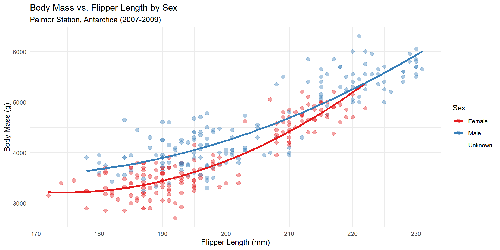
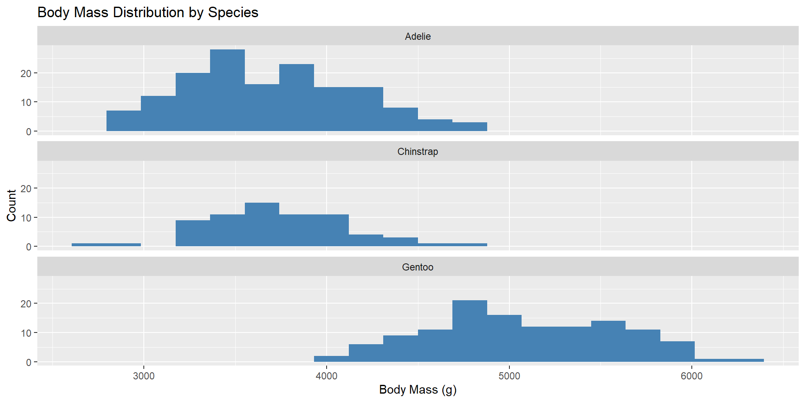
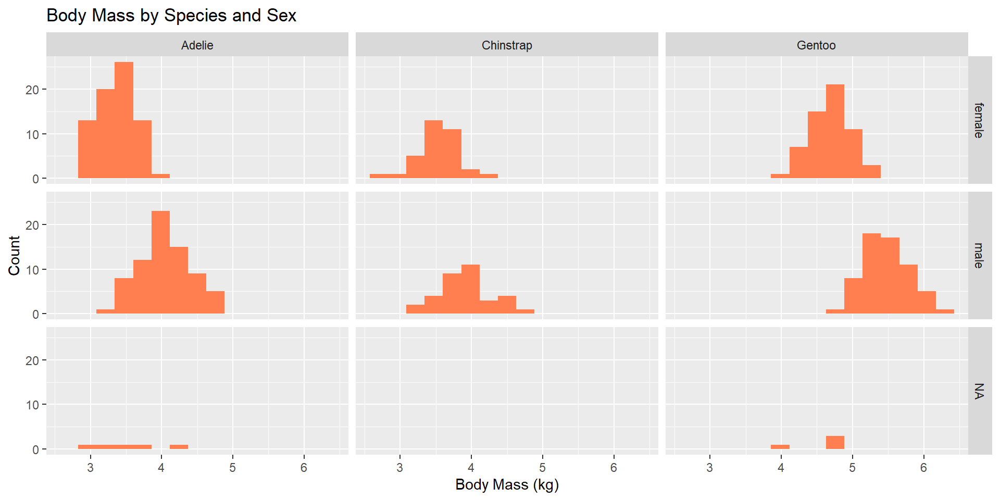
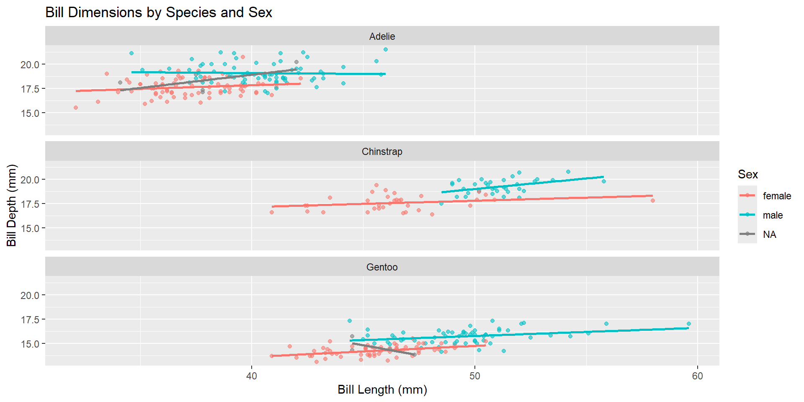
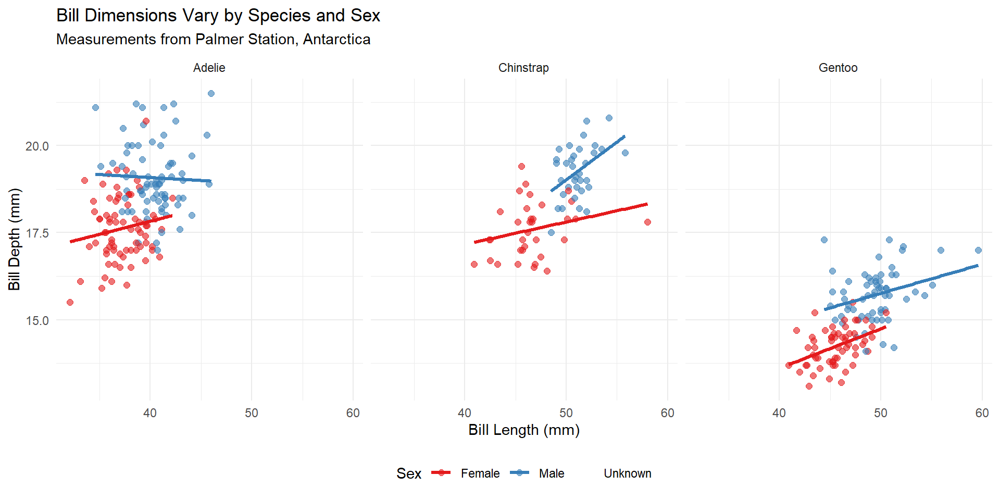
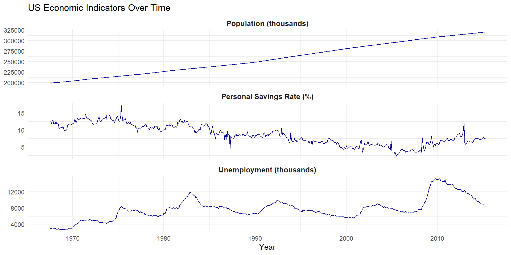
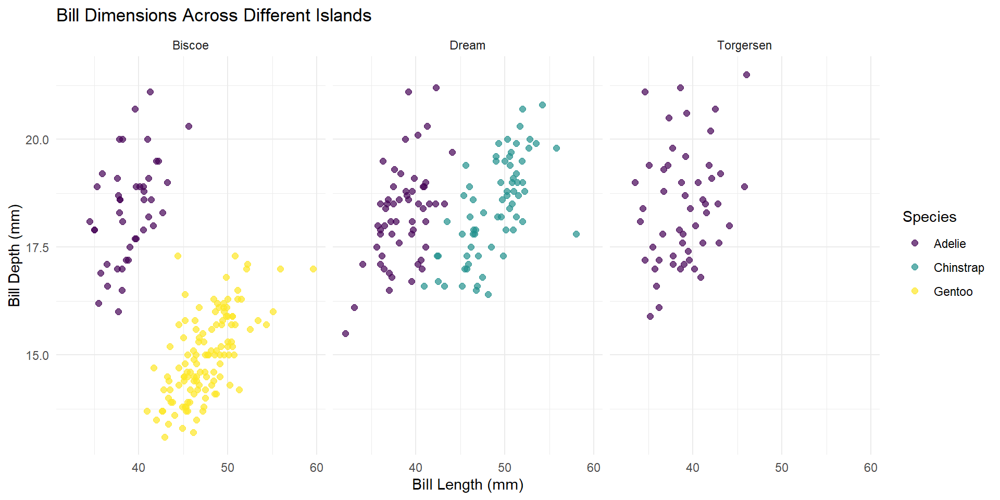
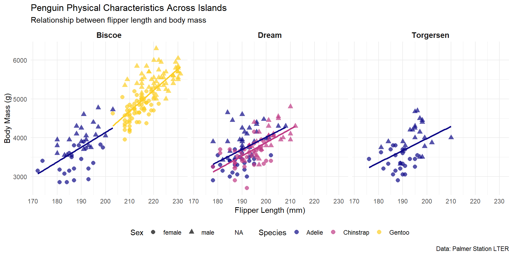

So far, you’ve learned to visualize single variables (like histograms) and relationships between two variables (like scatterplots). But real-world questions often involve multiple variables at once. For example: “How do penguin body characteristics vary by species, island, AND sex?”
This chapter covers two techniques for displaying multiple variables:
Grouping: Using colors, shapes, and sizes to distinguish groups within a single plot
Faceting: Creating separate mini-plots for different groups
The geom_smooth() automatically creates separate lines for each color group.
A Polished Example
Here’s a well-formatted plot using multiple customization techniques:
Code
ggplot(penguins, aes(x = flipper_length_mm,y = body_mass_g,color = sex)) +geom_point(alpha =0.4, size =2.5) +geom_smooth(method ="lm", formula = y ~poly(x, 2),se =FALSE,linewidth =1.3) +scale_color_brewer(palette ="Set1",labels =c("Female", "Male", "Unknown")) +labs(title ="Body Mass vs. Flipper Length by Sex",subtitle ="Palmer Station, Antarctica (2007-2009)",x ="Flipper Length (mm)",y ="Body Mass (g)",color ="Sex") +theme_minimal()

Faceting: Small Multiples
Instead of cramming everything into one plot, faceting creates separate subplots for each group. This is often clearer than using many colors and shapes.
Basic Faceting with facet_wrap()
Let’s compare body mass distributions across species:
Code
ggplot(penguins, aes(x = body_mass_g)) +geom_histogram(fill ="steelblue", bins =20) +facet_wrap(~species, ncol =1) +labs(title ="Body Mass Distribution by Species",x ="Body Mass (g)",y ="Count")

The ~species notation means “create separate plots for each species.” The ncol = 1 arranges them in a single column.
Faceting with Two Variables
Use facet_grid() to create a grid based on two variables:
Code
ggplot(penguins, aes(x = body_mass_g /1000)) +geom_histogram(fill ="coral", bins =15) +facet_grid(sex ~ species) +labs(title ="Body Mass by Species and Sex",x ="Body Mass (kg)",y ="Count")

The formula sex ~ species means rows are sex and columns are species.
Combining Grouping and Faceting
You can use both techniques together for even more insight:
Code
ggplot(penguins, aes(x = bill_length_mm,y = bill_depth_mm,color = sex)) +geom_point(alpha =0.6) +geom_smooth(method ="lm", se =FALSE) +facet_wrap(~species, ncol =1) +labs(title ="Bill Dimensions by Species and Sex",x ="Bill Length (mm)",y ="Bill Depth (mm)",color ="Sex")

Now we can see how the relationship between bill dimensions differs across species AND sex.
Making Facets More Readable
Let’s improve the previous plot with better formatting:
Code
ggplot(penguins, aes(x = bill_length_mm,y = bill_depth_mm,color = sex)) +geom_point(size =2, alpha =0.6) +geom_smooth(method ="lm", se =FALSE, linewidth =1.2) +facet_wrap(~species, ncol =3) +scale_color_brewer(palette ="Set1",labels =c("Female", "Male", "Unknown")) +theme_minimal() +labs(title ="Bill Dimensions Vary by Species and Sex",subtitle ="Measurements from Palmer Station, Antarctica",x ="Bill Length (mm)",y ="Bill Depth (mm)",color ="Sex") +theme(legend.position ="bottom")

Faceting with Time Series
Faceting works great for comparing trends over time. Let’s use the economics dataset to compare different economic indicators:
Code
# Prepare data for multiple time seriesecon_data <- economics %>%select(date, unemploy, psavert, pop) %>% tidyr::pivot_longer(cols =-date,names_to ="variable",values_to ="value")# Create labels for facetsecon_labels <-c("unemploy"="Unemployment (thousands)","psavert"="Personal Savings Rate (%)","pop"="Population (thousands)")ggplot(econ_data, aes(x = date, y = value)) +geom_line(color ="darkblue") +facet_wrap(~variable, ncol =1,scales ="free_y",labeller =labeller(variable = econ_labels)) +theme_minimal() +labs(title ="US Economic Indicators Over Time",x ="Year",y =NULL) +theme(strip.text =element_text(face ="bold", size =10))

The scales = "free_y" option lets each facet have its own y-axis scale, which is crucial when variables have different ranges.
Many Facets: Small Multiples
When you have many groups, faceting creates a “small multiples” display. Here’s an example with different islands:
Code
# Compare trends across islandsggplot(penguins, aes(x = bill_length_mm, y = bill_depth_mm)) +geom_point(aes(color = species), size =2, alpha =0.7) +facet_wrap(~island) +scale_color_viridis_d() +theme_minimal() +labs(title ="Bill Dimensions Across Different Islands",x ="Bill Length (mm)",y ="Bill Depth (mm)",color ="Species")

Choosing Between Grouping and Faceting
Use Grouping when: * You want to compare groups directly on the same axes * You have 2-4 groups * The differences between groups are subtle
Use Faceting when: * You have many groups (5+) * Comparisons are clearer with separate plots * Groups have very different ranges or patterns * You want to reduce visual clutter
Use Both when: * You need to show complex relationships * You have multiple categorical variables * Your story requires showing differences at multiple levels
Common Mistakes to Avoid
Too many groups: More than 5 colors becomes hard to distinguish
Unclear legends: Always label your aesthetic mappings clearly
Overcrowding: If your plot looks messy, try faceting instead
Inconsistent scales: Be careful with scales = "free" in facets, it can mislead
Missing context: Always include informative titles and labels
Complete Example: Putting It All Together
Here’s an example using multiple techniques:
Code
# Create a multi-variable visualizationggplot(penguins, aes(x = flipper_length_mm, y = body_mass_g,color = species,shape = sex)) +geom_point(size =2.5, alpha =0.7) +geom_smooth(aes(group = species), method ="lm",se =FALSE,linewidth =1,show.legend =FALSE) +facet_wrap(~island) +scale_color_viridis_d(option ="plasma", end =0.9) +theme_minimal() +theme(legend.position ="bottom",strip.text =element_text(face ="bold", size =11)) +labs(title ="Penguin Physical Characteristics Across Islands",subtitle ="Relationship between flipper length and body mass",x ="Flipper Length (mm)",y ="Body Mass (g)",color ="Species",shape ="Sex",caption ="Data: Palmer Station LTER")

This plot shows FIVE variables: flipper length, body mass, species (color + trend lines), sex (shape), and island (facets)!
Practice Exercises
Try creating these visualizations yourself:
Create a scatterplot of bill length vs. depth, colored by island, faceted by species
Make a histogram of body mass, faceted by both species and sex using facet_grid()
Plot flipper length over time (year), with different colors for species
Create a grouped boxplot showing body mass by species, with separate boxes for each sex (Hint: use interaction() or facet_wrap())
Challenge: Recreate the final “putting it all together” example with different variables (make it look nice and informative!).
---title: "Visualizing Multiple Variables"format: html: fig-width: 10 fig-height: 5 code-fold: show code-tools: true toc: true code-copy: true number_sections: true---# IntroductionSo far, you've learned to visualize single variables (like histograms) and relationships between two variables (like scatterplots). But real-world questions often involve multiple variables at once. For example: "How do penguin body characteristics vary by species, island, AND sex?"This chapter covers two techniques for displaying multiple variables:1. **Grouping**: Using colors, shapes, and sizes to distinguish groups within a single plot2. **Faceting**: Creating separate mini-plots for different groupsLet's get started with our packages and data:```{r}#| echo: true #| message: false#| warning: falselibrary(ggplot2)library(palmerpenguins)library(dplyr)# View our dataglimpse(penguins)```# Grouping: Multiple Variables in One PlotGrouping lets you add more variables to a plot by mapping them to visual properties like color, shape, size, or transparency.## Starting SimpleLet's begin with a basic relationship: flipper length vs. body mass.```{r}#| echo: true #| message: false#| warning: falseggplot(penguins, aes(x = flipper_length_mm, y = body_mass_g)) +geom_point() +labs(title ="Penguin Body Measurements",x ="Flipper Length (mm)",y ="Body Mass (g)")```## Adding Color to Show GroupsNow let's add species as a third variable using color:```{r}#| echo: true #| message: false#| warning: falseggplot(penguins, aes(x = flipper_length_mm, y = body_mass_g,color = species)) +geom_point() +labs(title ="Penguin Measurements by Species",x ="Flipper Length (mm)",y ="Body Mass (g)",color ="Species")```Each species now has its own color, making patterns much clearer!## Adding Shape for Another VariableWe can add a fourth variable (sex) using different point shapes:```{r}#| echo: true #| message: false#| warning: falseggplot(penguins, aes(x = flipper_length_mm,y = body_mass_g,color = species,shape = sex)) +geom_point(size =3, alpha =0.7) +labs(title ="Penguin Measurements by Species and Sex",x ="Flipper Length (mm)",y ="Body Mass (g)",color ="Species",shape ="Sex")```:::{.callout-important}* Mappings to variables go **inside** `aes()` (like `color = species`)* Fixed values go **outside** `aes()` (like `size = 3`):::## Creating Bubble Plots with SizeYou can map a continuous variable to point size, creating a "bubble plot":```{r}#| echo: true #| message: false#| warning: falseggplot(penguins, aes(x = flipper_length_mm,y = body_mass_g,color = species,size = bill_length_mm)) +geom_point(alpha =0.6) +labs(title ="Four Variables in One Plot",subtitle ="Size represents bill length",x ="Flipper Length (mm)",y ="Body Mass (g)",color ="Species",size ="Bill Length (mm)")```This plot shows FOUR variables at once! But be careful, too many variables can make plots hard to read.## Adding Trend Lines by GroupLet's explore the relationship between bill length and depth, with separate trend lines for each species:```{r}#| echo: true #| message: false#| warning: falseggplot(penguins, aes(x = bill_length_mm,y = bill_depth_mm,color = species)) +geom_point(alpha =0.5, size =2) +geom_smooth(method ="lm", se =FALSE, linewidth =1.2) +labs(title ="Bill Dimensions with Species-Specific Trends",x ="Bill Length (mm)",y ="Bill Depth (mm)",color ="Species") +theme_minimal()```The `geom_smooth()` automatically creates separate lines for each color group.## A Polished ExampleHere's a well-formatted plot using multiple customization techniques:```{r}#| echo: true #| message: false#| warning: falseggplot(penguins, aes(x = flipper_length_mm,y = body_mass_g,color = sex)) +geom_point(alpha =0.4, size =2.5) +geom_smooth(method ="lm", formula = y ~poly(x, 2),se =FALSE,linewidth =1.3) +scale_color_brewer(palette ="Set1",labels =c("Female", "Male", "Unknown")) +labs(title ="Body Mass vs. Flipper Length by Sex",subtitle ="Palmer Station, Antarctica (2007-2009)",x ="Flipper Length (mm)",y ="Body Mass (g)",color ="Sex") +theme_minimal()```# Faceting: Small MultiplesInstead of cramming everything into one plot, faceting creates separate subplots for each group. This is often clearer than using many colors and shapes.## Basic Faceting with `facet_wrap()`Let's compare body mass distributions across species:```{r}#| echo: true #| message: false#| warning: falseggplot(penguins, aes(x = body_mass_g)) +geom_histogram(fill ="steelblue", bins =20) +facet_wrap(~species, ncol =1) +labs(title ="Body Mass Distribution by Species",x ="Body Mass (g)",y ="Count")```The `~species` notation means "create separate plots for each species." The `ncol = 1` arranges them in a single column.## Faceting with Two VariablesUse `facet_grid()` to create a grid based on two variables:```{r}#| echo: true #| message: false#| warning: falseggplot(penguins, aes(x = body_mass_g /1000)) +geom_histogram(fill ="coral", bins =15) +facet_grid(sex ~ species) +labs(title ="Body Mass by Species and Sex",x ="Body Mass (kg)",y ="Count")```The formula `sex ~ species` means rows are sex and columns are species.## Combining Grouping and FacetingYou can use both techniques together for even more insight:```{r}#| echo: true #| message: false#| warning: falseggplot(penguins, aes(x = bill_length_mm,y = bill_depth_mm,color = sex)) +geom_point(alpha =0.6) +geom_smooth(method ="lm", se =FALSE) +facet_wrap(~species, ncol =1) +labs(title ="Bill Dimensions by Species and Sex",x ="Bill Length (mm)",y ="Bill Depth (mm)",color ="Sex")```Now we can see how the relationship between bill dimensions differs across species AND sex.## Making Facets More ReadableLet's improve the previous plot with better formatting:```{r}#| echo: true #| message: false#| warning: falseggplot(penguins, aes(x = bill_length_mm,y = bill_depth_mm,color = sex)) +geom_point(size =2, alpha =0.6) +geom_smooth(method ="lm", se =FALSE, linewidth =1.2) +facet_wrap(~species, ncol =3) +scale_color_brewer(palette ="Set1",labels =c("Female", "Male", "Unknown")) +theme_minimal() +labs(title ="Bill Dimensions Vary by Species and Sex",subtitle ="Measurements from Palmer Station, Antarctica",x ="Bill Length (mm)",y ="Bill Depth (mm)",color ="Sex") +theme(legend.position ="bottom")```## Faceting with Time SeriesFaceting works great for comparing trends over time. Let's use the `economics` dataset to compare different economic indicators:```{r}#| echo: true #| message: false#| warning: false# Prepare data for multiple time seriesecon_data <- economics %>%select(date, unemploy, psavert, pop) %>% tidyr::pivot_longer(cols =-date,names_to ="variable",values_to ="value")# Create labels for facetsecon_labels <-c("unemploy"="Unemployment (thousands)","psavert"="Personal Savings Rate (%)","pop"="Population (thousands)")ggplot(econ_data, aes(x = date, y = value)) +geom_line(color ="darkblue") +facet_wrap(~variable, ncol =1,scales ="free_y",labeller =labeller(variable = econ_labels)) +theme_minimal() +labs(title ="US Economic Indicators Over Time",x ="Year",y =NULL) +theme(strip.text =element_text(face ="bold", size =10))```The `scales = "free_y"` option lets each facet have its own y-axis scale, which is crucial when variables have different ranges.## Many Facets: Small MultiplesWhen you have many groups, faceting creates a "small multiples" display. Here's an example with different islands:```{r}#| echo: true #| message: false#| warning: false# Compare trends across islandsggplot(penguins, aes(x = bill_length_mm, y = bill_depth_mm)) +geom_point(aes(color = species), size =2, alpha =0.7) +facet_wrap(~island) +scale_color_viridis_d() +theme_minimal() +labs(title ="Bill Dimensions Across Different Islands",x ="Bill Length (mm)",y ="Bill Depth (mm)",color ="Species")```# Choosing Between Grouping and Faceting**Use Grouping when:*** You want to compare groups directly on the same axes* You have 2-4 groups* The differences between groups are subtle**Use Faceting when:*** You have many groups (5+)* Comparisons are clearer with separate plots* Groups have very different ranges or patterns* You want to reduce visual clutter**Use Both when:*** You need to show complex relationships* You have multiple categorical variables* Your story requires showing differences at multiple levels# Common Mistakes to Avoid1. **Too many groups**: More than 5 colors becomes hard to distinguish2. **Unclear legends**: Always label your aesthetic mappings clearly3. **Overcrowding**: If your plot looks messy, try faceting instead4. **Inconsistent scales**: Be careful with `scales = "free"` in facets, it can mislead5. **Missing context**: Always include informative titles and labels# Complete Example: Putting It All TogetherHere's an example using multiple techniques:```{r}#| echo: true #| message: false#| warning: false# Create a multi-variable visualizationggplot(penguins, aes(x = flipper_length_mm, y = body_mass_g,color = species,shape = sex)) +geom_point(size =2.5, alpha =0.7) +geom_smooth(aes(group = species), method ="lm",se =FALSE,linewidth =1,show.legend =FALSE) +facet_wrap(~island) +scale_color_viridis_d(option ="plasma", end =0.9) +theme_minimal() +theme(legend.position ="bottom",strip.text =element_text(face ="bold", size =11)) +labs(title ="Penguin Physical Characteristics Across Islands",subtitle ="Relationship between flipper length and body mass",x ="Flipper Length (mm)",y ="Body Mass (g)",color ="Species",shape ="Sex",caption ="Data: Palmer Station LTER")```This plot shows FIVE variables: flipper length, body mass, species (color + trend lines), sex (shape), and island (facets)!# Practice ExercisesTry creating these visualizations yourself:1. Create a scatterplot of bill length vs. depth, colored by island, faceted by species2. Make a histogram of body mass, faceted by both species and sex using `facet_grid()`3. Plot flipper length over time (year), with different colors for species4. Create a grouped boxplot showing body mass by species, with separate boxes for each sex (Hint: use `interaction()` or `facet_wrap()`)5. Challenge: Recreate the final "putting it all together" example with different variables (make it look nice and informative!).# Further Resources- [ggplot2 Book - Faceting](https://ggplot2-book.org/facet.html)- [R Graphics Cookbook - Multiple Groups](https://r-graphics.org/)- [Data Visualization: A Practical Introduction](https://socviz.co/)